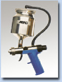
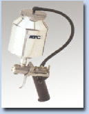
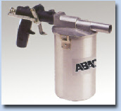

Spritzpistolen
Farb- Nebelreduzierte Niederdruck Farbspritzpistolen PN1 – PN2 – PN5 – PN6 & Putzpistole 429 N
Für das Handwerk entwickelt,
Die Farbspritzpistolen für jeden Zweck,
Mit der Farbnebelreduzierten Technologie.
Was auch immer Sie beschichten oder gestalten wollen, mit den Niederdruckfarbspritzpistolen vom Erfinder haben Sie stets das optimale Werkzeug für Ihren Einsatzzweck zur Hand. Egal ob Wände, Decken, Geländer, Gitter, glatte Türen und Tore, verwinkeltes Trag- und Fachwerk, schwer erreichbare Heizkörperzwischenräume oder leicht zugängliche Möbel, Nutz- und Baufahrzeuge. Sie spritzen umweltfreundlich, mit wenig Oversprey und erzielen gegenüber Walze und Pinsel eine Zeitersparnis von etwa 60%. Dabei ermöglichen das geringe Gewicht und die ausgewogene Ergonomie unserer Pistolen ein perfektes Handling und ermüdungsfreies Arbeiten. Durch den oben montierten Farbbecher wird ein höherer Materialdruck und ein besseres Fließverhalten erzielt. Sie sparen zeitraubende Vorarbeiten, wie aufwändiges Abkleben oder weiträumiges Abdecken. Unsere Farbspritzpistolen: schnell, sauber, erstklassige Oberflächen. Lackier- und Farbspritzpistole PN sind mit unserem Druckwandler auch mit Hochdruck (Kompressorenluft) zu betreiben. Die unabdingbare Grundausstattung für jeden Profi

Lackier- und Farbspritzpistole PN 1 A
Lackier- und Farbspritzpistole PN 2 A
 